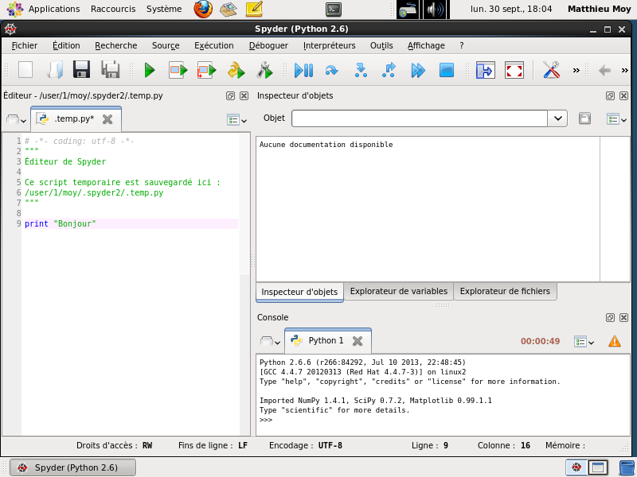
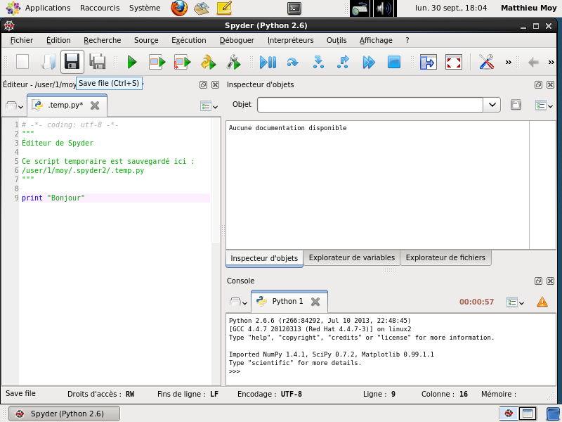
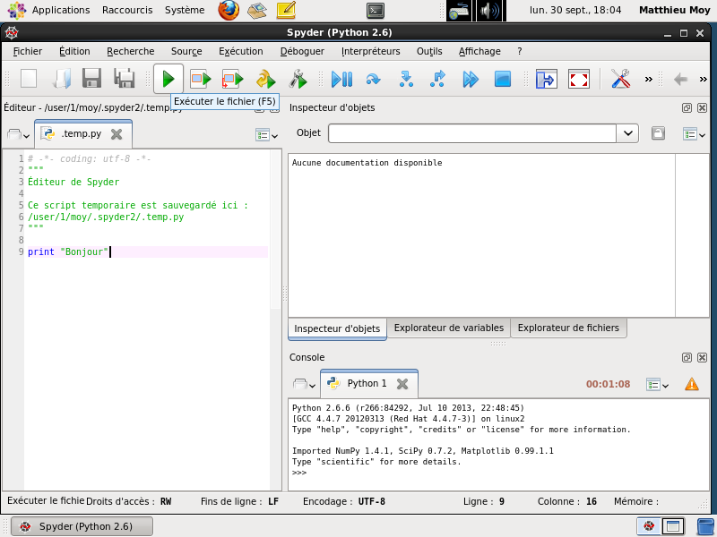
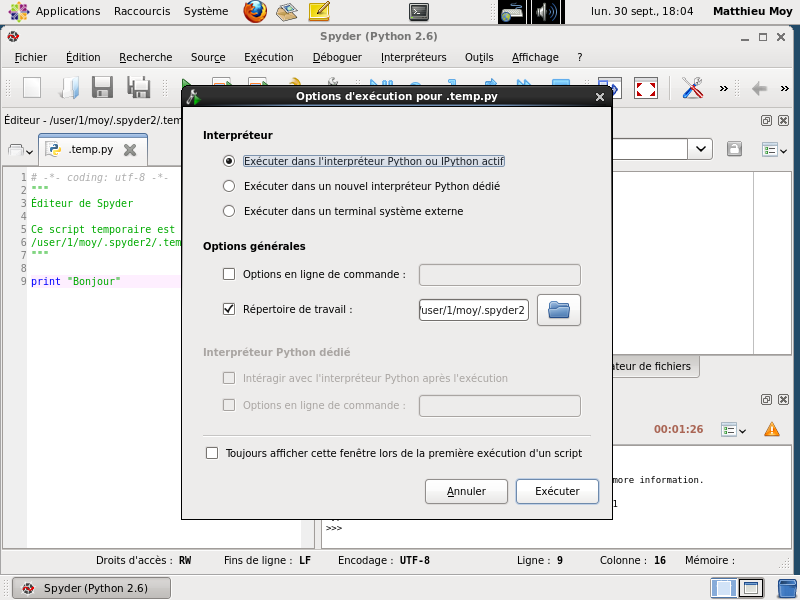
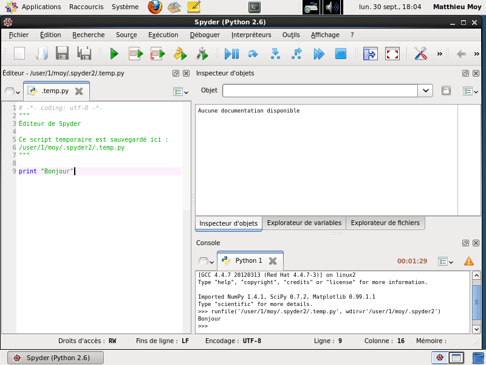
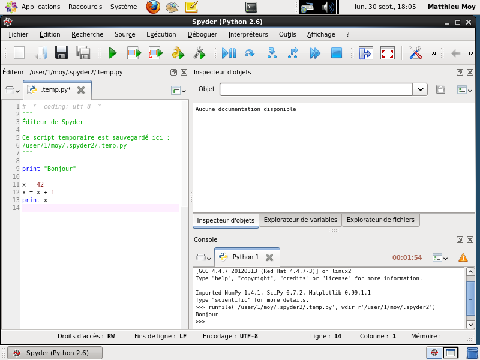
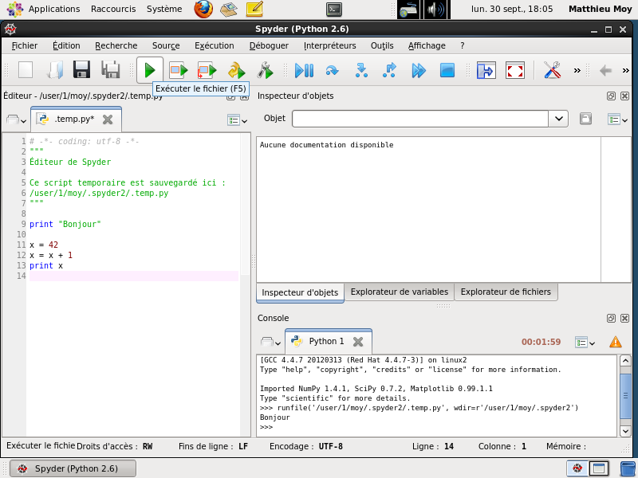
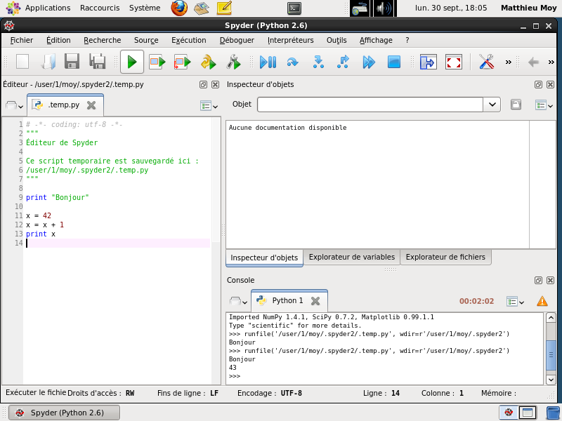
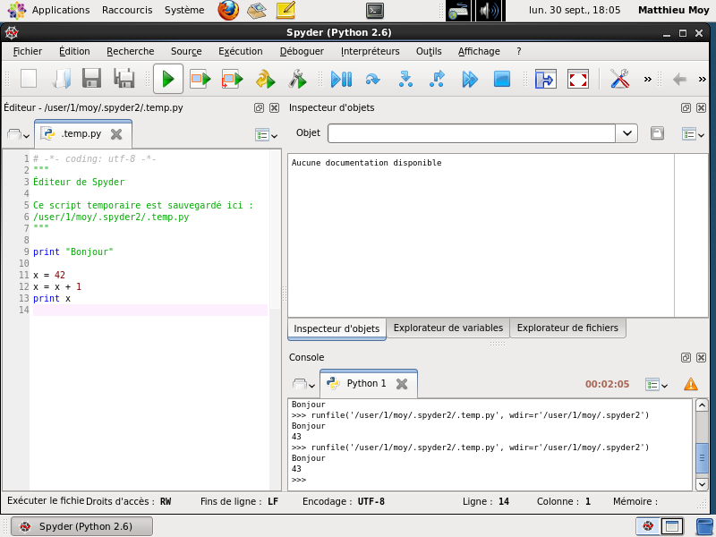

Loading presentation...



Le texte qu'on a entré est dans la mémoire de l'ordinateur, mais pas sur le disque (la petite étoile derrière le nom du fichier en haut de l'éditeur montre que le fichier n'est pas enregistré). On peut enregistrer le fichier avec ce bouton.

Ce bouton enregistre le programme, puis l'exécute dans l'interpréteur.


Le programme a bien été exécuté. Le résultat est visible dans la fenêtre de l'interpréteur.

On peut bien sûr entrer des programmes plus longs, sur plusieurs lignes. Contrairement au code entré directement dans l'interpréteur, rien n'est exécuté tant qu'on n'a pas cliqué sur « Exécuter le fichier ».


Spyder se souvient des paramètre entrés lors de la première exécution, et ne pose plus de questions.

Fin de la présentation.
Revenir au sommaire
Revenir au sommaire